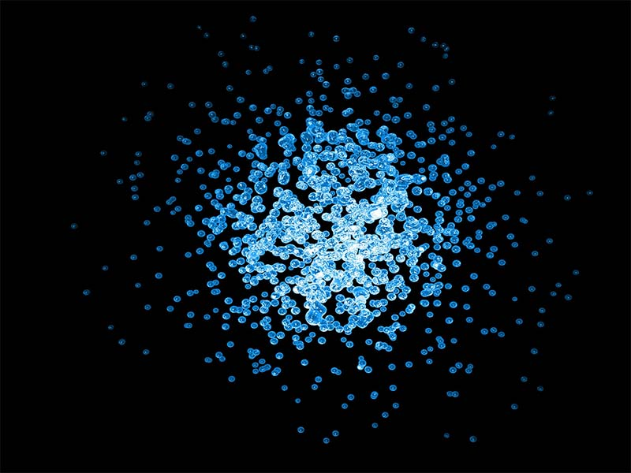

La teoría de cuerdas es un modelo fundamental de física teórica que básicamente asume que las partículas materiales aparentemente puntuales son en realidad "estados vibracionales" de un objeto extendido más básico llamado "cuerda" o "filamento".
De acuerdo con esta propuesta, un electrón no es un "punto" sin estructura interna y de dimensión cero, sino un amasijo de cuerdas minúsculas que vibran en un espacio-tiempo de más de cuatro dimensiones. Un punto no puede hacer nada más que moverse en un espacio tridimensional. De acuerdo con esta teoría, a nivel "subatómico" se percibiría que el electrón no es en realidad un punto, sino una cuerda en forma de lazo. Una cuerda puede hacer algo además de moverse; puede oscilar de diferentes maneras. Si oscila de cierta manera, entonces, subatómicamente veríamos un electrón; pero si oscila de otra manera, entonces veríamos un fotón, o un quark, o cualquier otra partícula del modelo estándar. Esta teoría, ampliada con otras como la de las supercuerdas o la Teoría M, pretende alejarse de la concepción del punto-partícula.
La siguiente formulación de una teoría de cuerdas se debe a Jöel Scherk y John Henry Schwarz, que en 1974 publicaron un artículo en el que mostraban que una teoría basada en objetos unidimensionales o "cuerdas" en lugar de partículas puntuales podía describir la fuerza gravitatoria. Aunque estas ideas no recibieron en ese momento mucha atención hasta la Primera revolución de supercuerdas de 1984. De acuerdo con la formulación de la teoría de cuerdas surgida de esta revolución, las teorías de cuerdas pueden considerarse de hecho un caso general de teoría de Kaluza-Klein cuantizada. Las ideas fundamentales son dos:
Los objetos básicos de la teoría no serían partículas puntuales sino objetos unidimensionales extendidos (en las cinco teorías de cuerdas convencionales estos objetos eran unidimensionales o "cuerdas"; actualmente en la teoría-M se admiten también de dimensión superior o "p-branas"). Esto renormaliza algunos infinitos de los cálculos perturbativos.
El espacio-tiempo en el que se mueven las cuerdas y p-branas de la teoría no sería el espacio-tiempo ordinario de cuatro dimensiones sino un espacio de tipo Kaluza-Klein, en el que a las cuatro dimensiones convencionales se añaden seis dimensiones compactadas en forma de variedad de Calabi-Yau. Por tanto convencionalmente en la teoría de cuerdas existe una dimensión temporal, tres dimensiones espaciales ordinarias y seis dimensiones compactadas e inobservables en la práctica.
La inobservabilidad de las dimensiones adicionales está ligada al hecho de que éstas estarían compactadas, y sólo serían relevantes a escalas pequeñas comparables con la longitud de Planck. Igualmente, con la precisión de medida convencional las cuerdas cerradas con una longitud similar a la longitud de Planck se asemejarían a partículas puntuales.
Brian R. Green: The elegant universe, 1999 [existe una edición española, El universo elegante, Ed. Crítica, Drakontos, ISBN 84-8432-781-7, 2006].
Teoría de supercuerdas en Astrocosmo
Michio Kaku - "Parallel Worlds" , 2005 ,Doubleday
{kind=link}